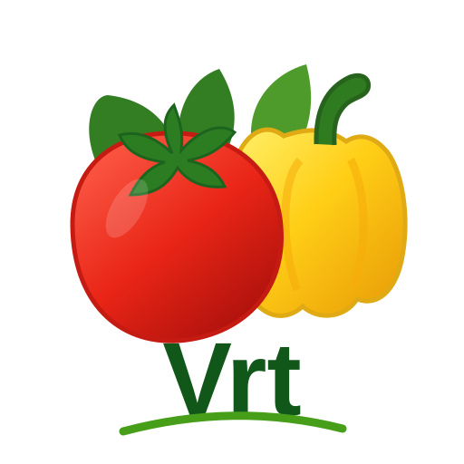

Navodila
Dotakni se grede za urejanje. Izberi celo gredo, polovici, tretjine ali četrtine. Vnesi rastlino in opombo. Načrt ne spremeni dejanskega vrta, dokler ne potrdiš sajenja. Prazni deli ostanejo rjavi.

VrtNaš vrt · 20 visokih gred · v0.4Dotakni se grede za urejanje. Izberi celo gredo, polovici, tretjine ali četrtine. Vnesi rastlino in opombo. Načrt ne spremeni dejanskega vrta, dokler ne potrdiš sajenja. Prazni deli ostanejo rjavi.